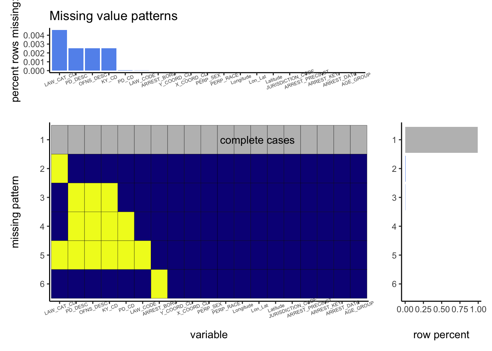

Chapter 4 Missing values

From the plot, we can see that compared with the whole data set there are very few NA values. After calculation, we find there are only 0.7% rows which contain NA values. Therefore, we decide to drop all the rows with NA values. Below is the summary of the arrest dataset.
## ARREST_KEY ARREST_DATE PD_CD PD_DESC KY_CD OFNS_DESC LAW_CODE
## Min. : 82422313 Min. :2012-01-02 Min. : 11.0 Length:2814549 Min. :101.0 Length:2814549 Length:2814549
## 1st Qu.: 93021166 1st Qu.:2013-10-10 1st Qu.:259.0 Class :character 1st Qu.:121.0 Class :character Class :character
## Median :145954364 Median :2015-09-08 Median :494.0 Mode :character Median :341.0 Mode :character Mode :character
## Mean :143809663 Mean :2016-01-03 Mean :494.3 Mean :284.8
## 3rd Qu.:173498667 3rd Qu.:2018-01-11 3rd Qu.:748.0 3rd Qu.:348.0
## Max. :234352983 Max. :2021-09-30 Max. :997.0 Max. :995.0
## LAW_CAT_CD ARREST_BORO ARREST_PRECINCT JURISDICTION_CODE AGE_GROUP PERP_SEX PERP_RACE
## Length:2814549 Length:2814549 Min. : 1.00 Min. : 0.000 Length:2814549 Length:2814549 Length:2814549
## Class :character Class :character 1st Qu.: 33.00 1st Qu.: 0.000 Class :character Class :character Class :character
## Mode :character Mode :character Median : 60.00 Median : 0.000 Mode :character Mode :character Mode :character
## Mean : 61.25 Mean : 1.339
## 3rd Qu.: 88.00 3rd Qu.: 0.000
## Max. :123.00 Max. :97.000
## X_COORD_CD Y_COORD_CD Latitude Longitude Lon_Lat
## Min. : 913357 Min. : 121131 Min. :40.50 Min. :-74.25 Length:2814549
## 1st Qu.: 992062 1st Qu.: 186387 1st Qu.:40.68 1st Qu.:-73.97 Class :character
## Median :1004749 Median : 207813 Median :40.74 Median :-73.93 Mode :character
## Mean :1005390 Mean : 209972 Mean :40.74 Mean :-73.92
## 3rd Qu.:1016539 3rd Qu.: 236095 3rd Qu.:40.81 3rd Qu.:-73.88
## Max. :1067302 Max. :8202360 Max. :62.08 Max. :-73.68